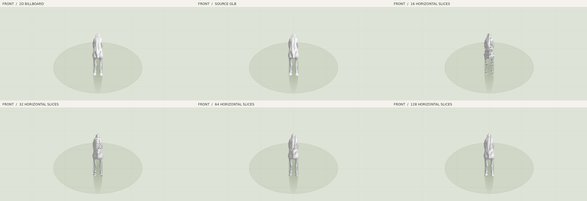
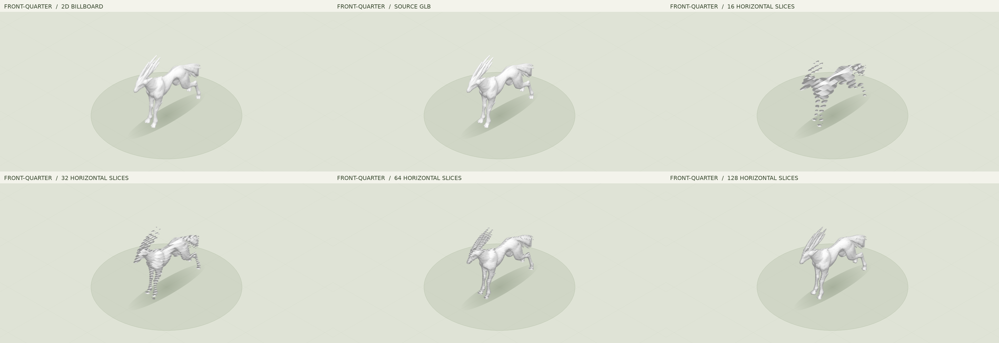
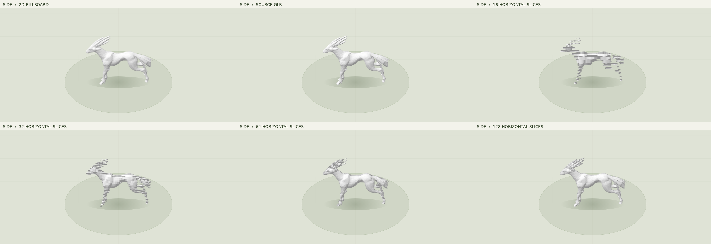
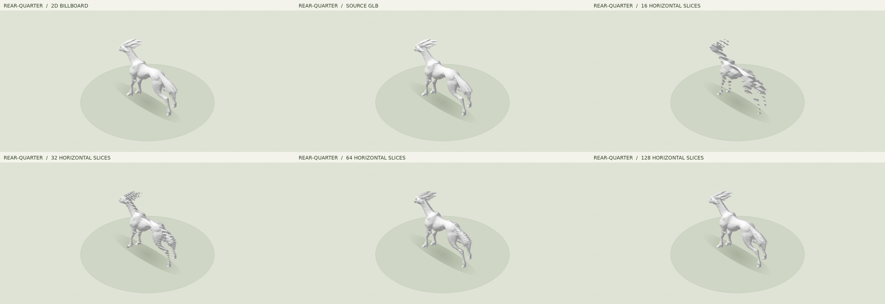
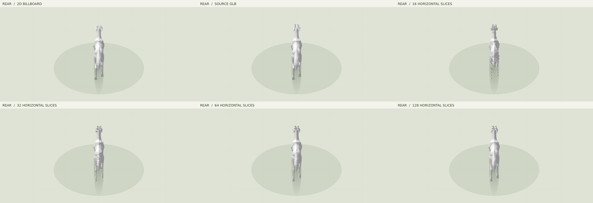
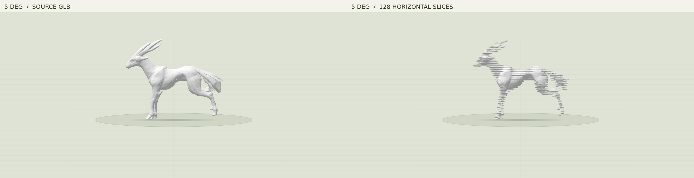
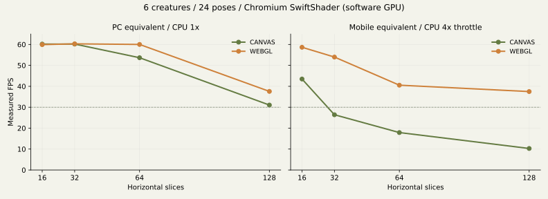
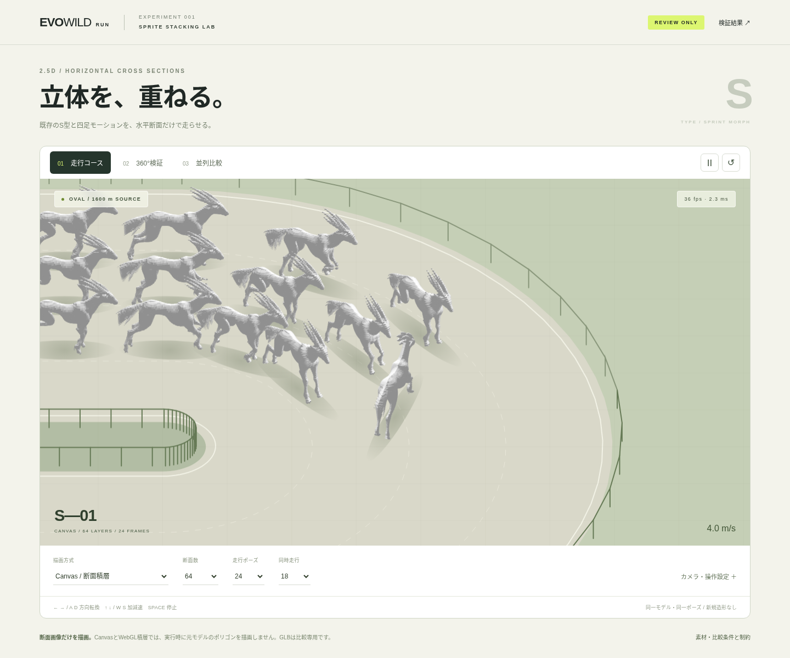
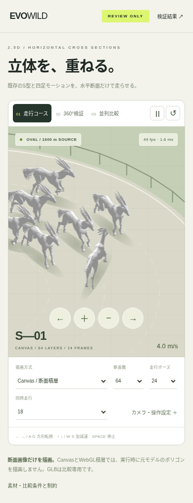

EVOWILD RUN / EXPERIMENT 001 / 2026-11-18
REVISE 実動は成立。S型レースへの採用は保留。
既存D3-C v2、既存IK、同一ポーズを使用。新規造形・本番統合・有料サービスなし。
操作デモへ戻る ↗ 性能CSV 全76条件・生データ 素材・コードのSHA256
128層は35°で元モデルに近づくが、5°では隙間が強い。48ポーズでも接地頂点の最大位置誤差は約2.8cm。16/32層は脚・角・胴の離断が大きくREJECT。64/128層はREVISE。モデル自体も既存レビュー素材で、指定参照画との造形・白青テクスチャ一致を新規承認していない。
元GLBにはテクスチャ・UV・頂点色がない。無彩色を保持し、参照画の彩色を生成して補わない。陰影は同じクリーチャー基準のLambert、影は共有楕円。世界光の再照明・物理的な落影は未検証。斜面と支持足の世界固定も未実装。
実際のブラウザ描画を固定シミュレーション時刻で30fpsに符号化した比較動画。実時間FPSの証拠は下記performance.json。
同じ位相.625、48ポーズ、35°。各画像は2D・元GLB・16/32/64/128層。クリックして原寸で確認。





| 層 | 判定 | 5方向 近似IoU | 最下段中心高 mm | PNG MB / 24 poses | RGBA MiB | PC Canvas fps | Mobile Canvas fps |
|---|---|---|---|---|---|---|---|
| 16 | REJECT | 0.649–0.790 | 90.9 | 0.44 | 15.0 | 60.2 | 43.5 |
| 32 | REJECT | 0.813–0.896 | 45.5 | 0.82 | 16.7 | 60.2 | 26.4 |
| 64 | REVISE | 0.917–0.956 | 22.7 | 1.61 | 32.2 | 53.7 | 17.9 |
| 128 | REVISE | 0.960–0.973 | 11.4 | 3.06 | 58.8 | 31.0 | 10.3 |

128層の近似IoU：5° .686 / 15° .905 / 35° .963 / 60° .963 / 80° .953。指標はグレースケール画素からの近似で、厳密なメッシュシルエットではない。画像を優先する。
実際の足裏の回収高：前左63.6cm、前右65.2cm、後脚左右48.0cm。骨盤上下幅は1.54cmで、脚の運動を胴体bobで代用していない。肩甲骨・胸部・頭・尾も既存ポーズから動く。連続IKを240ステップで評価し、stanceかつ地面1mm以内の実足裏頂点384点を、離散画像＋連続root再生と比較した。
| ポーズ | 最大接地頂点位置誤差 mm | RMS mm |
|---|---|---|
| 12 | 131.9 | 72.1 |
| 24 | 62.5 | 36.6 |
| 48 | 27.8 | 17.0 |
旋回時の追加誤差、加減速での可変ストライドIKは未再現。測定定義と生結果。
6体・24ポーズ・64層の抜粋。CPU1×/4×throttle、通信100Mbps/20msと10Mbps/80ms、冷キャッシュ、1秒warmup＋4秒sample。Chromium SwiftShaderのソフトウェアGPU。実機GPU／スマートフォンの保証値ではない。全方式で同じ離散骨ポーズを用い、元のIK計算はオフライン。2Dは同じGLBの16方向35°ベイクで、本番2D画面全体の性能ではない。

| 環境 | 方式 | FPS | 平均間隔 ms | p95 ms | 初期表示 s | JS heap MiB | Chrome RSS MiB |
|---|---|---|---|---|---|---|---|
| pc-equivalent | 2D同一素材ベイク | 60.2 | 16.6 | 16.7 | 1.04 | 4.6 | 763 |
| pc-equivalent | GLB元モデル | 11.6 | 86.6 | 100.1 | 1.35 | 18.8 | 771 |
| pc-equivalent | Canvas積層 | 53.7 | 18.6 | 33.3 | 0.75 | 3.5 | 697 |
| pc-equivalent | WebGL積層 | 60.0 | 16.7 | 16.7 | 0.92 | 14.8 | 820 |
| mobile-equivalent | 2D同一素材ベイク | 60.2 | 16.6 | 16.7 | 6.18 | 3.5 | 674 |
| mobile-equivalent | GLB元モデル | 8.2 | 121.2 | 166.7 | 6.57 | 21.6 | 646 |
| mobile-equivalent | Canvas積層 | 17.9 | 55.9 | 66.8 | 2.82 | 3.3 | 600 |
| mobile-equivalent | WebGL積層 | 40.5 | 24.7 | 33.4 | 3.06 | 7.5 | 683 |
| 環境 | 方式 | 層 | ポーズ | 体数 | FPS | p95 ms | 初期表示 s |
|---|---|---|---|---|---|---|---|
| pc-equivalent | Canvas積層 | 16 | 12 | 6 | 60.2 | 16.7 | 0.79 |
| pc-equivalent | Canvas積層 | 16 | 24 | 6 | 60.2 | 16.7 | 0.59 |
| pc-equivalent | Canvas積層 | 16 | 48 | 6 | 60.2 | 16.8 | 0.68 |
| pc-equivalent | Canvas積層 | 32 | 12 | 6 | 59.9 | 16.8 | 0.52 |
| pc-equivalent | Canvas積層 | 32 | 24 | 6 | 60.2 | 16.7 | 0.68 |
| pc-equivalent | Canvas積層 | 32 | 48 | 6 | 60.2 | 16.7 | 0.73 |
| pc-equivalent | Canvas積層 | 64 | 12 | 6 | 53.1 | 33.3 | 0.59 |
| pc-equivalent | Canvas積層 | 64 | 24 | 6 | 53.7 | 33.3 | 0.75 |
| pc-equivalent | Canvas積層 | 64 | 48 | 6 | 52.7 | 33.3 | 0.80 |
| pc-equivalent | Canvas積層 | 128 | 12 | 6 | 30.9 | 50.0 | 0.65 |
| pc-equivalent | Canvas積層 | 128 | 24 | 6 | 31.0 | 50.0 | 0.83 |
| pc-equivalent | Canvas積層 | 128 | 48 | 6 | 30.2 | 50.0 | 1.14 |
| pc-equivalent | WebGL積層 | 16 | 12 | 6 | 59.5 | 16.7 | 0.57 |
| pc-equivalent | WebGL積層 | 16 | 24 | 6 | 59.9 | 16.8 | 0.65 |
| pc-equivalent | WebGL積層 | 16 | 48 | 6 | 60.2 | 16.7 | 0.80 |
| pc-equivalent | WebGL積層 | 32 | 12 | 6 | 60.0 | 16.8 | 0.65 |
| pc-equivalent | WebGL積層 | 32 | 24 | 6 | 60.3 | 16.8 | 0.84 |
| pc-equivalent | WebGL積層 | 32 | 48 | 6 | 60.4 | 16.7 | 0.78 |
| pc-equivalent | WebGL積層 | 64 | 12 | 6 | 57.5 | 16.8 | 0.64 |
| pc-equivalent | WebGL積層 | 64 | 24 | 6 | 60.0 | 16.7 | 0.92 |
| pc-equivalent | WebGL積層 | 64 | 48 | 6 | 51.7 | 33.4 | 0.91 |
| pc-equivalent | WebGL積層 | 128 | 12 | 6 | 36.4 | 49.9 | 0.76 |
| pc-equivalent | WebGL積層 | 128 | 24 | 6 | 37.6 | 50.0 | 0.99 |
| pc-equivalent | WebGL積層 | 128 | 48 | 6 | 38.5 | 49.9 | 1.16 |
| pc-equivalent | GLB元モデル | 64 | 12 | 6 | 11.0 | 116.7 | 1.41 |
| pc-equivalent | GLB元モデル | 64 | 24 | 6 | 11.6 | 100.1 | 1.35 |
| pc-equivalent | GLB元モデル | 64 | 48 | 6 | 11.8 | 100.0 | 1.39 |
| pc-equivalent | 2D同一素材ベイク | 64 | 12 | 6 | 60.2 | 16.8 | 0.68 |
| pc-equivalent | 2D同一素材ベイク | 64 | 24 | 6 | 60.2 | 16.7 | 1.04 |
| pc-equivalent | 2D同一素材ベイク | 64 | 48 | 6 | 60.2 | 16.8 | 1.68 |
| pc-equivalent | Canvas積層 | 64 | 24 | 1 | 59.7 | 16.7 | 0.63 |
| pc-equivalent | Canvas積層 | 64 | 24 | 18 | 36.8 | 33.4 | 0.70 |
| pc-equivalent | WebGL積層 | 64 | 24 | 1 | 60.2 | 16.7 | 0.76 |
| pc-equivalent | WebGL積層 | 64 | 24 | 18 | 39.9 | 50.0 | 0.77 |
| pc-equivalent | GLB元モデル | 64 | 24 | 1 | 49.6 | 33.4 | 1.18 |
| pc-equivalent | GLB元モデル | 64 | 24 | 18 | 5.2 | 233.4 | 1.63 |
| pc-equivalent | 2D同一素材ベイク | 64 | 24 | 1 | 60.2 | 16.8 | 1.02 |
| pc-equivalent | 2D同一素材ベイク | 64 | 24 | 18 | 60.1 | 16.7 | 1.02 |
| mobile-equivalent | Canvas積層 | 16 | 12 | 6 | 48.9 | 33.4 | 1.51 |
| mobile-equivalent | Canvas積層 | 16 | 24 | 6 | 43.5 | 33.4 | 1.88 |
| mobile-equivalent | Canvas積層 | 16 | 48 | 6 | 45.7 | 33.4 | 2.37 |
| mobile-equivalent | Canvas積層 | 32 | 12 | 6 | 29.5 | 50.0 | 1.66 |
| mobile-equivalent | Canvas積層 | 32 | 24 | 6 | 26.4 | 50.1 | 2.26 |
| mobile-equivalent | Canvas積層 | 32 | 48 | 6 | 27.5 | 50.1 | 3.14 |
| mobile-equivalent | Canvas積層 | 64 | 12 | 6 | 14.6 | 83.4 | 2.12 |
| mobile-equivalent | Canvas積層 | 64 | 24 | 6 | 17.9 | 66.8 | 2.82 |
| mobile-equivalent | Canvas積層 | 64 | 48 | 6 | 19.7 | 66.7 | 4.13 |
| mobile-equivalent | Canvas積層 | 128 | 12 | 6 | 11.1 | 116.7 | 2.56 |
| mobile-equivalent | Canvas積層 | 128 | 24 | 6 | 10.3 | 133.3 | 4.04 |
| mobile-equivalent | Canvas積層 | 128 | 48 | 6 | 10.2 | 133.4 | 6.44 |
| mobile-equivalent | WebGL積層 | 16 | 12 | 6 | 59.8 | 16.7 | 1.57 |
| mobile-equivalent | WebGL積層 | 16 | 24 | 6 | 58.7 | 16.8 | 1.90 |
| mobile-equivalent | WebGL積層 | 16 | 48 | 6 | 60.3 | 16.8 | 2.27 |
| mobile-equivalent | WebGL積層 | 32 | 12 | 6 | 58.5 | 16.7 | 1.64 |
| mobile-equivalent | WebGL積層 | 32 | 24 | 6 | 54.0 | 33.3 | 2.23 |
| mobile-equivalent | WebGL積層 | 32 | 48 | 6 | 46.4 | 33.4 | 3.19 |
| mobile-equivalent | WebGL積層 | 64 | 12 | 6 | 42.6 | 33.4 | 2.19 |
| mobile-equivalent | WebGL積層 | 64 | 24 | 6 | 40.5 | 33.4 | 3.06 |
| mobile-equivalent | WebGL積層 | 64 | 48 | 6 | 40.5 | 33.4 | 4.44 |
| mobile-equivalent | WebGL積層 | 128 | 12 | 6 | 39.6 | 33.4 | 2.71 |
| mobile-equivalent | WebGL積層 | 128 | 24 | 6 | 37.5 | 33.4 | 3.94 |
| mobile-equivalent | WebGL積層 | 128 | 48 | 6 | 40.1 | 33.4 | 6.64 |
| mobile-equivalent | GLB元モデル | 64 | 12 | 6 | 8.2 | 166.7 | 6.23 |
| mobile-equivalent | GLB元モデル | 64 | 24 | 6 | 8.2 | 166.7 | 6.57 |
| mobile-equivalent | GLB元モデル | 64 | 48 | 6 | 9.0 | 150.1 | 6.39 |
| mobile-equivalent | 2D同一素材ベイク | 64 | 12 | 6 | 60.2 | 16.7 | 3.67 |
| mobile-equivalent | 2D同一素材ベイク | 64 | 24 | 6 | 60.2 | 16.7 | 6.18 |
| mobile-equivalent | 2D同一素材ベイク | 64 | 48 | 6 | 60.3 | 16.7 | 10.94 |
| mobile-equivalent | Canvas積層 | 64 | 24 | 1 | 57.2 | 16.8 | 2.56 |
| mobile-equivalent | Canvas積層 | 64 | 24 | 18 | 17.5 | 83.4 | 2.78 |
| mobile-equivalent | WebGL積層 | 64 | 24 | 1 | 60.0 | 16.7 | 2.83 |
| mobile-equivalent | WebGL積層 | 64 | 24 | 18 | 42.9 | 33.4 | 3.04 |
| mobile-equivalent | GLB元モデル | 64 | 24 | 1 | 36.3 | 33.4 | 5.94 |
| mobile-equivalent | GLB元モデル | 64 | 24 | 18 | 3.6 | 366.6 | 6.96 |
| mobile-equivalent | 2D同一素材ベイク | 64 | 24 | 1 | 60.1 | 16.7 | 6.22 |
| mobile-equivalent | 2D同一素材ベイク | 64 | 24 | 18 | 60.2 | 16.8 | 6.17 |
JS heap、RGBA backing、Chrome RSSは別の範囲。RSSには共有領域の二重計上があり、GPUメモリの全量を意味しない。24ポーズの64層はPNG1.61MB／RGBA32.2MiB、128層は3.06MB／58.8MiB。WebGLには追加GPU texture backingがありうる。単一HTML版は全素材を埋め込むため、通常版のロード／メモリ計測と異なる。
PCと390pxモバイル相当でキー加減速・自由旋回・タッチhold/cancel・層数/ポーズ・全4方式の往復・18体・overflowなしを確認。QA、76条件、動画収録のbrowser errorは0。


QA結果 / 断面と4脚の検証 / 収録情報 / 画像指標の定義 / build log
ZIPは展開後index.htmlを開く。デモはネットワーク・サーバー不要。通常版と生成スクリプトはGitHubの専用branchで提供。素材選定・制約・再現手順の全文 ↗
mainへの統合なし。今後のKEEPには、造形を保持した低角度/薄部位改善、接地誤差の改善、実機での品質・性能確認が必要。